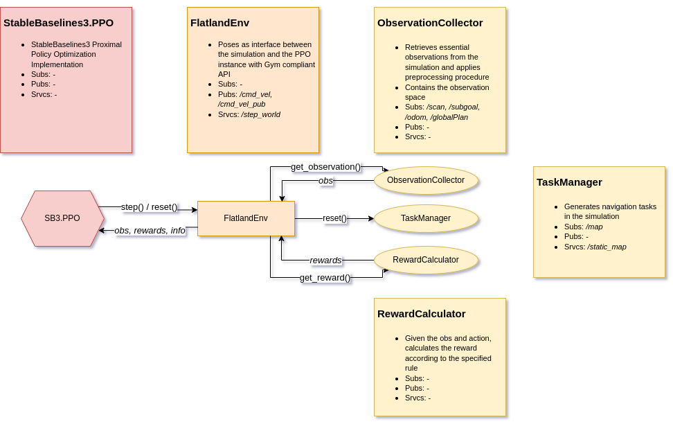

Training
As a fundament for our Deep Reinforcement Learning approaches, StableBaselines3 was used.
Features included so far:
- Simple handling of the training script through program parameters
- Choose between different robot models
- Choose a predefined Deep Neural Network
- Create your own custom Multilayer Perceptron via program parameters
- Networks will be trained, evaluated and saved
- Load your trained agent to continue training
- Optionally log training and evaluation data
- Enable and modify a custom training curriculum
- Multiprocessed rollout collection for training
Start the Training
To start a training procedure you need two terminals.
In terminal 1 start the simulation environment:
roslaunch arena_bringup start_training.launch
In terminal 2 run the training script:
cd arena-rosnav # navigate to the arena-rosnav directory
python training/scripts/train_agent.py --agent AGENT_22
Training Script
Usage
Generic program call:
train_agent.py [agent flag] [agent_name | unique_agent_name | custom mlp params] [optional flag] [optional flag] ...
| Program call | Agent Flag (mutually exclusive) | Usage | Description |
|---|---|---|---|
train_agent.py |
--agent |
agent_name (see below) | initializes a predefined network from scratch |
--load |
unique_agent_name (see below) | loads agent to the given name | |
--custom-mlp |
custom_mlp_params (see below) | initializes custom MLP according to given arguments |
Custom Multilayer Perceptron parameters will only be considered when --custom-mlp was set!
| Custom Mlp Flags | Syntax | Description |
|---|---|---|
--body |
{num}-{num}-... |
architecture of the shared latent network |
--pi |
{num}-{num}-... |
architecture of the latent policy network |
--vf |
{num}-{num}-... |
architecture of the latent value network |
--act_fn |
{relu, sigmoid or tanh} |
activation function to be applied after each hidden layer |
| Optional Flags | Description |
|---|---|
--config {string}, defaults to "default" |
Looks for the given config file name in ../arena_local_planner_drl/configs/hyperparameters to load the configurations from |
--n {integer} |
timesteps in total to be generated for training |
--tb |
enables tensorboard logging |
-log, --eval_log |
enables logging of evaluation episodes |
--no-gpu |
disables training with GPU |
--num_envs {integer} |
number of environments to collect experiences from for training (for more information refer to Multiprocessed Training) |
Examples
Training with a predefined DNN
Currently you can choose between several different Deep Neural Networks each of which have been object of research projects, for example:
| Agent name | Inspired by |
|---|---|
| MLP_ARENA2D | arena2D |
| DRL_LOCAL_PLANNER | drl_local_planner |
| CNN_NAVREP | NavRep |
e.g. training with the MLP architecture from arena2D:
train_agent.py --agent MLP_ARENA2D
You can find the most recently implemented neural network architectures in: custom_policy.py
Load a DNN for training
In order to differentiate between agents with similar architectures but from different runs a unique agent name will be generated when using either --agent or --custom-mlp mode (when train from scratch).
The name consists of:
[architecture]_[year]_[month]__[hour]_[minute]
To load a specific agent you simply use the flag --load, e.g.:
train_agent.py --load MLP_ARENA2D_2021_01_19__03_20
Note: currently only agents which were trained with PPO given by StableBaselines3 are compatible with the training script.
Training with a custom MLP
Instantiating a MLP architecture with an arbitrary number of layers and neurons for training was made as simple as possible by providing the option of using the --custom-mlp flag. By typing in the flag additional flags for the architecture of latent layers get accessible (see above).
e.g. given following architecture:
obs
|
<256>
|
ReLU
|
<128>
|
ReLU
/ \
<256> <16>
| |
action value
program must be invoked as follows:
train_agent.py --custom-mlp --body 256-128 --pi 256 --vf 16 --act_fn relu
Multiprocessed Training
We provide for either testing and training purposes seperate launch scripts:
start_arena_flatland.launchencapsulates the simulation environment featuring the different intermediate planners in a single process. Training is also possible within this simulation.start_training.launchdepicts the slimer simulation version as we target a higher troughput here in order to be able to gather training data as fast as possible. The crucial feature of this launch file is that it is able to spawn an arbitrary number of environments to collect the rollouts with and thus allows for significant speedup through asynchronicity.
First terminal: Simulation The first terminal is needed to run arena.
Run these commands:
workon rosnav
roslaunch arena_bringup start_training.launch train_mode:=true use_viz:=false task_mode:=random map_file:=map_small num_envs:=4
Second terminal: Training script A second terminal is needed to run the training script.
- Run these four commands:
workon rosnav
roscd arena_local_planner_drl
- Now, run one of the two commands below to start a training session:
python scripts/training/train_agent.py --load pretrained_ppo_mpc --n_envs 4 --eval_log
python scripts/training/train_agent.py --load pretrained_ppo_baseline --n_envs 4 --eval_log
Note: Please inform yourself how many cores are provided by your processor in order to fully leverage local computing capabilities.
Third terminal: Visualization A third terminal is needed in order to start rviz for visualization.
- Run this command:
roslaunch arena_bringup visualization_training.launch ns:=*ENV NAME*
Note: The training environments start with prefix sim and end with the index. For example: sim_1, sim_2 and so on. The evaluation environment which is used during the periodical benchmarking in training can be shown with ns:=eval_sim.
Ending a training session
When the training script is done, it will print the following information and then exit:
Time passed: {time in seconds}s
Training script will be terminated
Hyperparameters
The training script will consider the hyperparameter yaml file which was specified with the --config flag. The default configuration file is named default.yaml and can be found at:
~/catkin_ws/src/arena-rosnav/arena_navigation/arena_local_planner/learning_based/arena_local_planner_drl/configs/hyperparameters/default.json
Following hyperparameters can be adapted:
| Parameter | Description |
|---|---|
| agent_name | Unique agent identifier (set by the training script) |
| robot | Robot name to load robot specific .yaml file containing its settings. (set by the training script) |
| actions_in_observationspace | When set true, actions will be appended to the observation space and thus will be available as an additional input feature to learn on. Noticeable performance improvements when utilizing reward function that incorporates robot velocity. |
| normalize | If observations are normalized before fed to the network |
| train_max_steps_per_episode | Max timesteps per training episode |
| eval_max_steps_per_episode | Max timesteps per evaluation episode |
| goal_radius | Radius of the goal |
| task_mode | Mode tasks will be generated in (custom, random, staged). In custom mode one can place obstacles manually via Rviz. In random mode there's a fixed number of obstacles which are spawned randomly distributed on the map after each episode. In staged mode the training curriculum will be used to spawn obstacles. (more info) |
| batch_size | Batch size (n_envs * n_steps) |
| gamma | Discount factor |
| n_steps | The number of steps to run for each environment per update (set automatically by training script depending on batch_size and n_envs) |
| ent_coef | Entropy coefficient for the loss calculation |
| learning_rate | The learning rate, it can be a function of the current progress remaining (from 1 to 0) (i.e. batch size is n_steps and n_env where n_env is number of environment copies running in parallel) |
| vf_coef | Value function coefficient for the loss calculation |
| max_grad_norm | The maximum value for the gradient clipping |
| gae_lambda | Factor for trade-off of bias vs variance for Generalized Advantage Estimator |
| m_batch_size | Minibatch size |
| n_epochs | Number of epoch when optimizing the surrogate loss |
| clip_range | Clipping parameter, it can be a function of the current progress remaining (from 1 to 0). |
| reward_fnc | Number of the reward function (defined in *../rl_agent/utils/reward.py*) |
| discrete_action_space | If robot uses discrete action space |
| curr_stage | When "staged" training is activated: which stage to start the training with. |
(more information on PPO implementation of SB3)
Note: For now further parameters like the threshold type for the curriculum or the number of eval episodes need to be specified inline in the training script.
Reward Functions
The reward functions are defined in:
../arena_local_planner_drl/rl_agent/utils/reward.py
At present, one can chose between five reward functions which can be set in the hyperparameters yaml file:
Rule 0
| reward | description | value |
|---|---|---|
| success reward | ||
| collision reward | ||
| danger reward | <img src="https://latex.codecogs.com/gif.latex?r_{d}^{t}&space;=&space;\begin{cases}&space;-0.25&space;&&space;\text{&space;if&space;}&space;\exists{o&space;\in&space;O}&space;:&space;d(p_{robot}^t,&space;p_{obs}^t)&space;<&space;D_{s}\&space;0&space;&&space;\text{&space;otherwise&space;}&space;\end{cases}" title="r_{d}^{t} = \begin{cases} -0.25 & \text{ if } \exists{o \in O} : d(p_{robot}^t, p_{obs}^t) < D_{s}\ 0 & \text{ otherwise } \end{cases}" /> | |
| progress reward |
Rule 1
| reward | description | value |
|---|---|---|
| success reward | ||
| collision reward | ||
| danger reward | <img src="https://latex.codecogs.com/gif.latex?r_{d}^{t}&space;=&space;\begin{cases}&space;-0.25&space;&&space;\text{&space;if&space;}&space;\exists{o&space;\in&space;O}&space;:&space;d(p_{robot}^t,&space;p_{obs}^t)&space;<&space;D_{s}\&space;0&space;&&space;\text{&space;otherwise&space;}&space;\end{cases}" title="r_{d}^{t} = \begin{cases} -0.25 & \text{ if } \exists{o \in O} : d(p_{robot}^t, p_{obs}^t) < D_{s}\ 0 & \text{ otherwise } \end{cases}" /> | |
| progress reward | ||
| distance travelled reward |
Rule 2
| reward | description | value |
|---|---|---|
| success reward | ||
| collision reward | ||
| danger reward | <img src="https://latex.codecogs.com/gif.latex?r_{d}^{t}&space;=&space;\begin{cases}&space;-0.25&space;&&space;\text{&space;if&space;}&space;\exists{o&space;\in&space;O}&space;:&space;d(p_{robot}^t,&space;p_{obs}^t)&space;<&space;D_{s}\&space;0&space;&&space;\text{&space;otherwise&space;}&space;\end{cases}" title="r_{d}^{t} = \begin{cases} -0.25 & \text{ if } \exists{o \in O} : d(p_{robot}^t, p_{obs}^t) < D_{s}\ 0 & \text{ otherwise } \end{cases}" /> | |
| progress reward | ||
| distance travelled reward | ||
| following global plan reward | <img src="https://latex.codecogs.com/gif.latex?r_{fg}^{t}&space;=&space;\begin{cases}&space;\begin{aligned}&space;0.1&space;*&space;vel_{linear}^{t}&space;&&space;\text{&space;if&space;}&space;\min_{wp&space;\in&space;G}d(p_{wp}^t,&space;p_{r}^t)&space;<&space;0.5&space;\text{m}&space;\&space;0&space;&&space;\text{&space;otherwise&space;}&space;\end{aligned}&space;\end{cases}" title="r_{fg}^{t} = \begin{cases} \begin{aligned} 0.1 * vel_{linear}^{t} & \text{ if } \min_{wp \in G}d(p_{wp}^t, p_{r}^t) < 0.5 \text{m} \ 0 & \text{ otherwise } \end{aligned} \end{cases}" /> |
Rule 3
| reward | description | value |
|---|---|---|
| success reward | ||
| collision reward | ||
| danger reward | <img src="https://latex.codecogs.com/gif.latex?r_{d}^{t}&space;=&space;\begin{cases}&space;-0.25&space;&&space;\text{&space;if&space;}&space;\exists{o&space;\in&space;O}&space;:&space;d(p_{robot}^t,&space;p_{obs}^t)&space;<&space;D_{s}\&space;0&space;&&space;\text{&space;otherwise&space;}&space;\end{cases}" title="r_{d}^{t} = \begin{cases} -0.25 & \text{ if } \exists{o \in O} : d(p_{robot}^t, p_{obs}^t) < D_{s}\ 0 & \text{ otherwise } \end{cases}" /> | |
| progress reward | ||
| following global plan reward | <img src="https://latex.codecogs.com/gif.latex?r_{fg}^{t}&space;=&space;\begin{cases}&space;\begin{aligned}&space;0.1&space;*&space;vel_{linear}^{t}&space;&&space;\text{&space;if&space;}&space;\min_{wp&space;\in&space;G}d(p_{wp}^t,&space;p_{r}^t)&space;<&space;0.5&space;\text{m}&space;\&space;0&space;&&space;\text{&space;otherwise&space;}&space;\end{aligned}&space;\end{cases}" title="r_{fg}^{t} = \begin{cases} \begin{aligned} 0.1 * vel_{linear}^{t} & \text{ if } \min_{wp \in G}d(p_{wp}^t, p_{r}^t) < 0.5 \text{m} \ 0 & \text{ otherwise } \end{aligned} \end{cases}" /> | |
| distance to globalplan reward |
Rule 4
| reward | description | value |
|---|---|---|
| success reward | ||
| collision reward | ||
| danger reward | <img src="https://latex.codecogs.com/gif.latex?r_{d}^{t}&space;=&space;\begin{cases}&space;-0.25&space;&&space;\text{&space;if&space;}&space;\exists{o&space;\in&space;O}&space;:&space;d(p_{robot}^t,&space;p_{obs}^t)&space;<&space;D_{s}\&space;0&space;&&space;\text{&space;otherwise&space;}&space;\end{cases}" title="r_{d}^{t} = \begin{cases} -0.25 & \text{ if } \exists{o \in O} : d(p_{robot}^t, p_{obs}^t) < D_{s}\ 0 & \text{ otherwise } \end{cases}" /> | |
| progress reward | ||
| following global plan reward | <img src="https://latex.codecogs.com/gif.latex?r_{fg}^{t}&space;=&space;\begin{cases}&space;\begin{aligned}&space;0.1&space;*&space;vel_{linear}^{t}&space;&&space;\text{&space;if&space;}&space;\min_{wp&space;\in&space;G}d(p_{wp}^t,&space;p_{r}^t)&space;<&space;0.5&space;\text{m}&space;\&space;0&space;&&space;\text{&space;otherwise&space;}&space;\end{aligned}&space;\end{cases}" title="r_{fg}^{t} = \begin{cases} \begin{aligned} 0.1 * vel_{linear}^{t} & \text{ if } \min_{wp \in G}d(p_{wp}^t, p_{r}^t) < 0.5 \text{m} \ 0 & \text{ otherwise } \end{aligned} \end{cases}" /> | |
| distance to globalplan reward |
| | direction change reward |
|
Training Curriculum
For the purpose of speeding up the training, an exemplary training currucilum was implemented. But what exactly is a training curriculum you may ask. We basically divide the training process in difficulty levels, here the so called stages, in which the agent will meet an arbitrary number of obstacles depending on its learning progress. Different metrics can be taken into consideration to measure an agents performance.
In our implementation a reward threshold or a certain percentage of successful episodes must be reached to trigger the next stage. The statistics of each evaluation run is calculated and considered. Moreover, when a new best mean reward was reached, the model will be saved automatically.
Currently, the threshold type and respective values can be set in the following line: click here
Exemplary training curriculum:
| Stage | Static Obstacles | Dynamic Obstacles |
|---|---|---|
| 1 | 0 | 0 |
| 2 | 10 | 0 |
| 3 | 20 | 0 |
| 4 | 0 | 10 |
| 5 | 10 | 10 |
| 6 | 13 | 13 |
For an explicit example, click here.
Run the trained Agent
Now that you've trained your agent, you surely want to deploy and evaluate it. For that purpose we've implemented a specific task mode in which you can specify your scenarios in a .json file. The agent will then be challenged according to the scenarios defined in the file. Please refer to https://github.com/ignc-research/arena-scenario-gui/ in order to read about the process of creating custom scenarios. Moreover, you can test your agent on custom maps in randomly generated scenarios with a predefined number of dynamic obstacles.
As with the training script, one can start the testing simulation environment with either one of two launch scripts:
- start_arena_flatland.launch:
- Allows for evaluation in continuous simulation time (emulates real time) as well as in controlled time stepping with our hierarichal navigation stack, consisting of a global planner, intermediate planner and with the DRL agent acting as the local planner.
- Episode information can be logged with the use_recorder flag
- start_training.launch:
- Starts an evaluation environment in continuous simulation time (emulates real time) as well as in controlled time stepping with either the spatial horizon intermediate planner (train_mode == false) or the end goal being the only subgoal (train_mode == true).
- One can test multiple agents sequentially with run_script.py. This feature is only realized with this launch file, as start_arena_flatland.launch starts an own plan manager which interfers with the plan manager of the run script. Both plan managers have their own goal radius and thus might detect an end of episode differently. This potentially adulterates the logged statistics.
- Episode information can optionally be logged in a csv file by setting the
--logflag for the run script dedicated plan manager to control the episodes.
Test Agents in Main Simulation
The deployment can be simply initiated through one command:
# Start the simulation with one of the launch files
roslaunch arena_bringup start_arena_flatland.launch map_file:="map1" disable_scenario:="false" scenario_file:="eval/obstacle_map1_obs20.json" local_planner:="rosnav" model:="burger" agent_name:="burger"
Note: You need to adjust the parameters of the command according to your desired deployment configuration.
Test Agents in Training Simulation
Firstly, you need to start the simulation environment:
# Start the simulation with one of the launch files
roslaunch arena_bringup start_training.launch num_envs:=1 map_folder_name:=map1 train_mode:=false model:=burger
Note:
- The
train_modeparameter determines if the simulation will run in emulated real time (wherestep_sizeandupdate_ratedetermine the simulation speed) or in the manipulating time stepping modus (via /step_world rostopic). - Make sure that you start the simulation with the matching robot model for the agent
Then, run the run_agent.py script with the desired agent and scenario file:
python run_agent.py --load burger --scenario obstacle_map1_obs20
Generic program call:
roscd arena_local_planner_drl/scripts/deployment/
run_agent.py --load [agent_name] -s [scenario_name] -v [number] [optional flag]
| Program call | Flags | Usage | Description |
|---|---|---|---|
run_agent.py |
--load |
agent_name (see below) | loads agent to the given name |
-s or --scenario |
scenario_name (as in ../scenario/eval/) | loads the scenarios to the given .json file name | |
(optional)-v or --verbose |
0 or 1 | verbose level | |
(optional) --no-gpu |
None | disables the gpu for the evaluation | |
(optional) --num_eps |
Integer, defaults to 100 | number of episodes the agent/s get/s challenged | |
(optional) --max_steps |
Integer, defaults to np.inf | max amount of actions per episode, before the episode is resetted automatically |
- Example call:
python run_agent.py --load DRL_LOCAL_PLANNER_2021_03_22__19_33 -s obstacle_map1_obs20
Notes:
- The
--logflag should only be set with start_training.launch as simulation launcher as it requires the dedicated plan manager to control the episodes in order to log correct statistics. - Make sure that the simulation speed doesn't overlap the agent's action calculation time (an obvious indicator: same action gets published multiple times successively and thus the agent moves unreasonably)
- If your agent was trained with normalized observations, it's necessary to provide the vec_normalize.pkl
Sequential Evaluation of multiple Agents
For automatic testing of several agents in a sequence, one can specify a list containing an arbitrary number of agent names in run_script.py.
Note:
- Guaranteed execution of each agent is currently only provided with the start_training.launch as simulation launcher
--loadflag has to be set None, otherwise the script will only consider the agent provided with the flag.
Pipeline Components

Important Directories
| Path | Description |
|---|---|
../arena_local_planner_drl/agents |
models and associated hyperparameters.json will be saved to and loaded from here (uniquely named directory) |
../arena_local_planner_drl/configs |
yaml files containing robots action spaces and the training curriculum |
../arena_local_planner_drl/training_logs |
tensorboard logs and evaluation logs |
../arena_local_planner_drl/scripts |
python file containing the predefined DNN architectures and the training script |